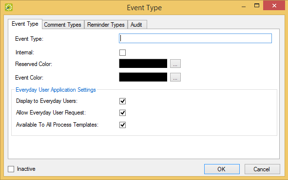

You can configure , which you use to classify or categorize the different events that your organization has. For example, you might configure lectures, meetings, and conferences, and so on as some of your event types.
Event Types window
Tip: Optionally, to view all event types in your EMS database, regardless of status, under Show, click .
Event Type dialog box, Event Type tab

|
Field |
Description |
|---|---|
|
Event Type |
The name or classification for the event. Note: The event type can be a maximum of 30 characters, including spaces. |
|
Internal |
Indicates that the event type is internal to your organization. Note: Used for internal reporting purposes only. The event type is not printed on external documents such as confirmations and invoices, and it is not hidden in any area of your EMS application. |
|
Reserved Color |
Select the color that is to be used in the Reservation Book to indicate when the reserved time extends past the event time. |
|
Event Color |
Select the color that is to be used in the Navigator and in the Reservation Book to indicate this type of event. Note: Lighter colors are a better choice so as not to obscure the reservation/booking name. |
|
|
|
|
Display to Everyday Users |
Indicates that events of this type are to be displayed when a user browses for events in EMS Web App. Note: If an event is labeled with a type for which this option has been cleared, then the event is not displayed when a user browses for the event in EMS Web App. |
|
Allow Guest Request |
Indicates that this event type is an available option in |
|
Available to All Process Templates |
Select this option to assign this event type to all everyday user process templates. |
|
Inactive |
Leave this option blank to add the event type as an active event type. Select this option to inactivate the event type. |
Event Type dialog box, Comment Types tab

Tip: If the appropriate comment type is not available, you can configure it. See “Configuring Comment Types”.
Event Type dialog box, Reminder Types tab

Tip: If the appropriate reminder type is not available, you can configure it. See “Configuring Reminder Types”.